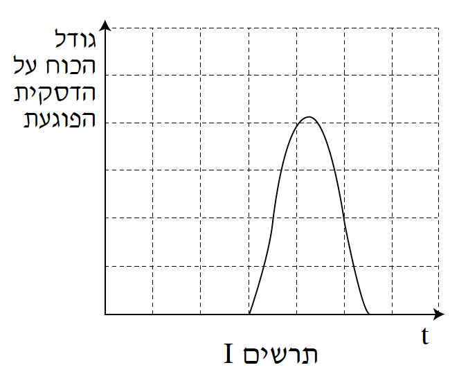
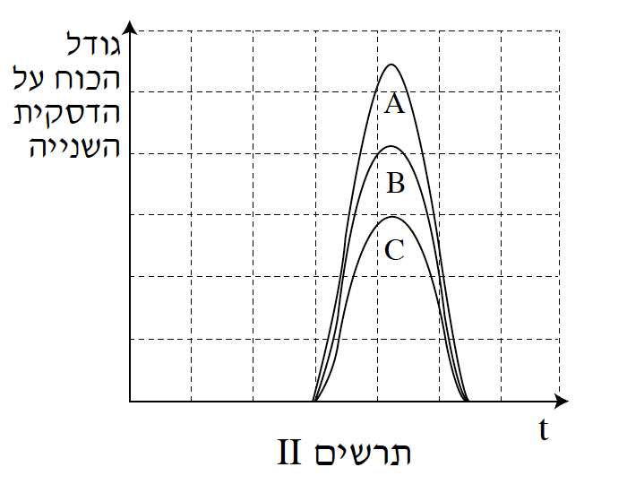

שאלה 3
תלמידים עורכים ניסויים בהתנגשות של דסקיות על שולחן אופקי חלק. באחת הפעמים
דסקית שמסתה m1 נעה במהירות v ופוגעת בדסקית נחה שמסתה m2. אחרי
ההתנגשות (המצחית) הדסקית הנחה מתחילה לנוע בכיוון התנועה של הדסקית הפוגעת.
הניחו כי ההתנגשות אלסטית.
א.
נתונות המסות m1 = 25 gr, m2 = 50 gr
ומהירות הדסקית הפוגעת (m1), v = 0.3 ms.
חשבו את:
(1)
מהירות הדסקית הפוגעת (m1) לאחר ההתנגשות, u1 (גודל וכיוון).
(2)
מהירות הדסקית השנייה (m2) לאחר ההתנגשות, u2 (גודל וכיוון).
הסבירו את חישוביכם. (12 נקודות)
ב.
פתחו ביטוי עבור המהירות u2 למקרה שהדסקית m1 פוגעת בדסקית
נחה m2. בטאו את תשובתכם בעזרת m1, m2 ו־v. (10 נקודות)
ג.
הראו שכאשר m1 > m2 מהירות הדסקית m2 אחרי ההתנגשות, u2, תהיה גדולה
מן המהירות של הדסקית הפוגעת, v. (6 נקודות)
ד.
לדסקית הפוגעת (m1) מחובר חיישן כוח (שמסתו זניחה). גרף הכוח שפעל עליה בזמן
ההתנגשות מתואר בתרשים I.
(1)
קבעו איזה מהגרפים A, B או C שבתרשים II מתאר נכון את גודלו של הכוח שפעל על הדסקית השנייה (m2) כאשר m1 = m2.
(2)
קבעו איזה מהגרפים A, B או C שבתרשים II מתאר נכון את גודלו של הכוח שפעל על הדסקית השנייה (m2) כאשר m1 > m2.
נמקו את קביעותיכם בשני המקרים.
(513 נקודות)

